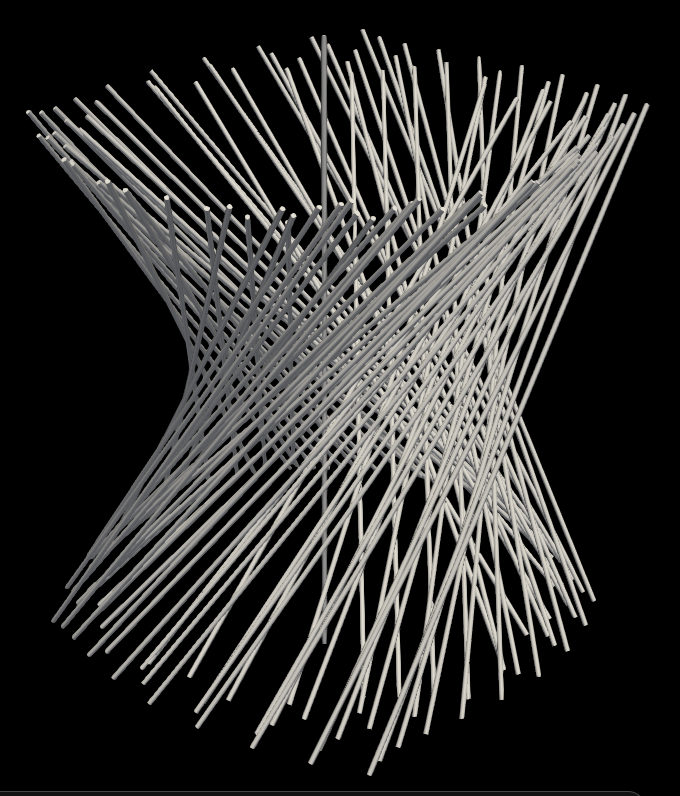
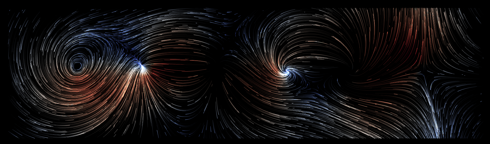

The Fibration filter computes the fibrations from 2D vectorfield, by using the magnitude and direction of the vectors.

The RidgeLine filter computes ridge lines of point (node) data. This filter operates on unstructured grid data and produces geometry output.

The RidgeSurface filter extracts ridge or valley surfaces from point (node) scalar data. This filter operates on unstructured grid data and produces geometry output.

The Vectorfield Generating sources computes a vectorfield from a txt file that defines critical points.